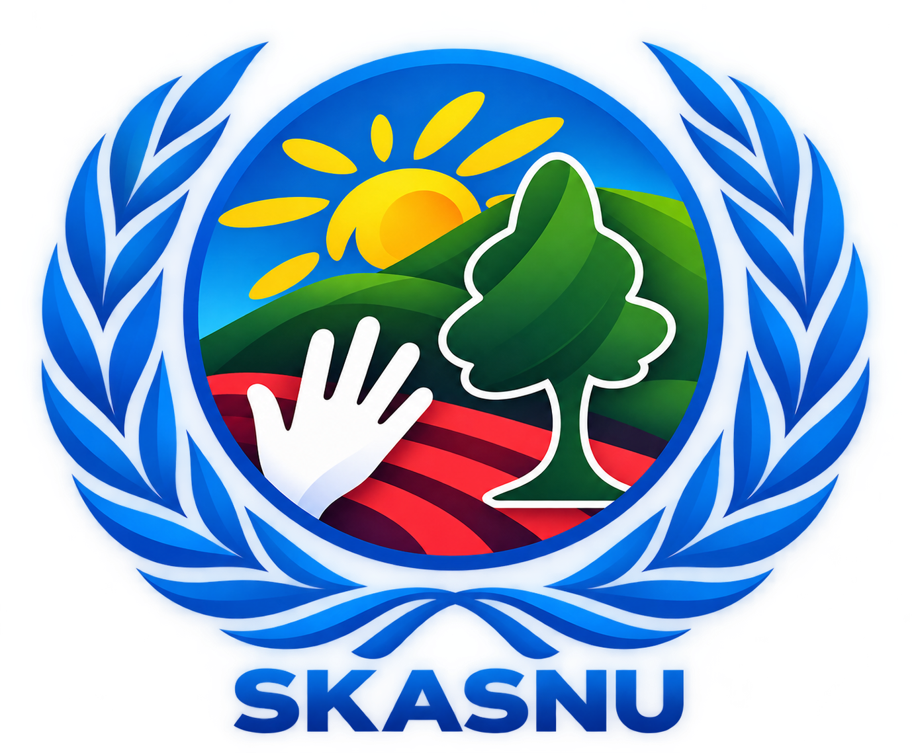

“Establecer la paz duradera es el trabajo de la educación; todo lo que la política puede hacer es mantenernos fuera de la guerra.” — MARIA MONTESSORI
SKASNU es el Modelo de Naciones Unidas anual de la Unidad Educativa Particular Despertar. Su nombre rinde homenaje a los ideales de cooperación internacional que sostienen a las Naciones Unidas. Este evento está diseñado estrictamente como un circuito académico intercolegial.
Esta edición reúne de manera exclusiva a delegaciones de instituciones educativas de Quito y el Valle de Tumbaco. No se aceptan inscripciones individuales ni de personas externas a unidades educativas formalmente acreditadas. Esto garantiza un entorno académico riguroso y seguro, con comités exclusivamente en español.
El trabajo intelectual del delegado es estrictamente personal: la investigación, el documento de posición, el discurso de apertura y la negociación en sala son suyos. SKASNU no admite el uso de inteligencia artificial para producir contenido de debate — la excelencia se demuestra con criterio propio, no con herramientas externas.
Los delegados desarrollan habilidades de investigación, oratoria, negociación, liderazgo y redacción diplomática — competencias clave para su vida universitaria y profesional. Cada comité trabaja dos temas: uno ya publicado por la organización y uno definido por su presidencia.
Cada delegado elige sus opciones en orden de preferencia al momento de que su colegio apruebe su participación. Contamos con 4 foros altamente especializados.
Los comités con mayor demanda suelen cerrarse antes de la fecha límite. Recomendamos confirmar cupos con anticipación.
Pilares y reconocimientos que permiten a los delegados vivir una experiencia más allá de la dinámica tradicional de comité.
Un modelo que fomenta la independencia, el respeto mutuo y el aprendizaje colaborativo, reflejando los principios de la educación Montessori en cada debate.
Promovemos el cuidado ambiental y el respeto por la vida ofreciendo alimentación completamente vegetariana durante todas las jornadas del modelo.
Más allá de la competencia, reconocemos la capacidad de llegar a consensos, la empatía y la construcción de soluciones conjuntas de cada delegación.
Nuestro enfoque integra la excelencia académica con un profundo sentido de responsabilidad ambiental y social. Cada delegado experimenta un entorno donde el bienestar y la diplomacia van de la mano.
El modelo se desarrolla íntegramente en las instalaciones de la Unidad Educativa Particular Despertar, en Quito. Los delegados no salen del campus durante la jornada.
Plenarias, ceremonias y comités desarrollados en áreas abiertas y salones adaptados a nuestra filosofía, promoviendo un ambiente armónico.
Refrigerios y almuerzo los dos días del modelo, con un menú 100% vegetariano.
Personal docente y administrativo a cargo de cada comité, con protocolos de seguridad durante toda la jornada.
Exclusivo para unidades educativas. Selecciona tu perfil y completa el formulario correspondiente para que nuestro comité organizador evalúe tu solicitud.
Incluye materiales, refrigerios, almuerzo los dos días, certificación individual y acceso a todas las actividades.
Los presidentes de mesa no pagan inscripción.
Hemos recibido la solicitud de tu institución. Nuestro equipo la revisará y nos pondremos en contacto con el coordinador muy pronto.
Tus datos han sido registrados correctamente. Nos comunicaremos contigo vía correo electrónico con los siguientes pasos.
Para completar tu postulación a presidencia, requerimos que llenes el siguiente formulario complementario con detalles técnicos.
Completar en Google Forms